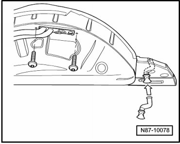
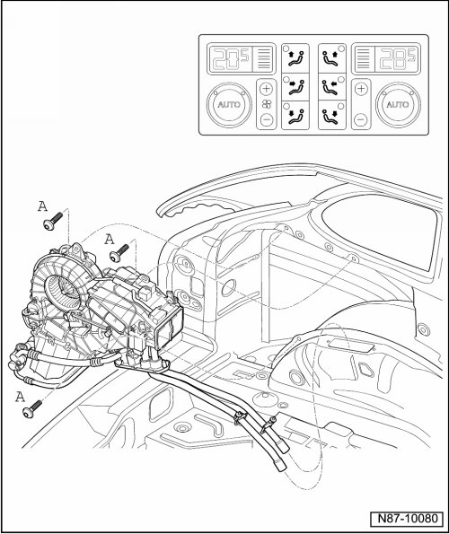

Second Rear Heating and A/C Unit
Second Rear Heating and A/C Unit
Special tools, testers and auxiliary items required
• Drip Tray (VAS 6208)
• Hose Clamps up to Diameter 40 mm (3093)
• A/C Service Station (VAS 6007A) or succeeding model.
Removing
• Refrigerant must be extracted before hand using e.g. A/C Service Station (VAS 6007A).
• Observe notes, refer to --> [ Engine Compartment Refrigerant Circuit Components, 2 Zone and 4 Zone ] Engine Compartment Refrigerant Circuit Components, 2 Zone and 4 Zone.
Perform following work first:
- Switch off all electrical consumers.
- Switch off ignition.
- Remove ignition key.
- Extract the refrigerant, for example using the A/C System Service Station (VAS 6007A).
• Environmentally hazardous draining of refrigerant is an offense punishable by law.
- Remove rear left wheel housing liner.
CAUTION!
Contact with hot engine coolant can cause severe scalding.
Coolant temperature can be above 100° with a warm engine. The cooling system is under pressure.
If necessary, reduce pressure and temperature before repairs.
- Clamp off the coolant hoses with the Hose Clamps Up To 40 mm Diameter (VAS 3093) and disconnect the hose connections.
CAUTION!
There is a danger of ice-up.
Refrigerant leaks out if refrigerant circuit is not discharged.
Refrigerant must be extracted before opening the refrigerant circuit. If the refrigerant circuit is not opened within 10 minutes after extracting it, pressure may build up in the circuit again. The refrigerant must be extracted again.
- Remove refrigerant line screws (12 Nm) and remove refrigerant lines from retaining plate.
- Remove retaining plate screws (10 Nm).

- Remove side trim at left of luggage compartment.

- Disconnect connectors at 2nd heating and A/C unit.
- Remove heating and air conditioning unit - A - screws (8 Nm).
- Remove heating and A/C unit.
Installing
Install in reverse order.
• Condensation water hose with valve must not be kinked or pinched. Refer to --> [ Rear Condensation Water Hose with Valve, Checking ] Rear Condensation Water Hose with Valve, Checking